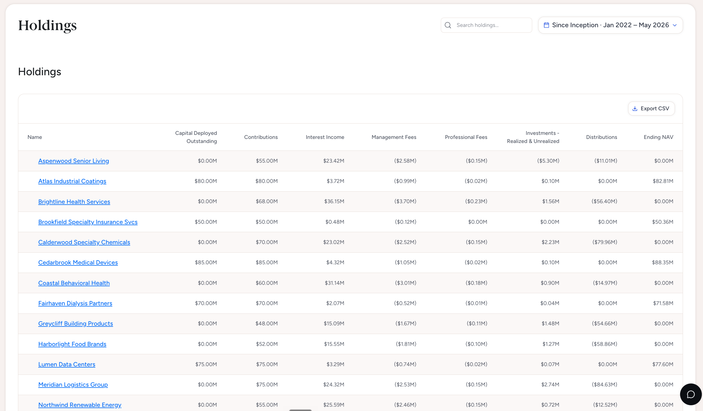

01
Founders, GPs and Managing Partners
Scale AUM and institutionalize the firm without operational complexity and headcount growing at the same rate.
The Ellis platform
Ellis connects your existing systems, reconciles positions and cash flows to source, and turns trusted data into action across fund and firm operations.
Built for
CFOs and COOs of private credit funds managing $100M to $1B in AUM.
Trust by design
Every material figure can be reviewed and traced to its underlying record.
Ellis connects to the administrators, accounting systems, servicing data, documents and spreadsheets a manager already uses.
Exceptions, approvals, calculation logic and source lineage remain visible to the people responsible for the result.
What Ellis does
Connect
Ellis connects directly to your loan accounting system, fund admin extract, GL, and borrower files — no new system of record, no migration, no rip-and-replace. Every source is captured as it exists today, with enterprise security and a private tenant on by default.

Stakeholder value
Scale AUM and institutionalize the firm without operational complexity and headcount growing at the same rate.
Reconcile systems, review exceptions and produce source-verifiable reporting from one governed record.
See borrower and portfolio changes earlier and compare current performance with the original underwriting case.
Work from cleaner information and better supporting evidence without displacing the administrator’s formal responsibilities, the auditor’s independence or the manager’s judgment.
Agents
Ellis agents operate on the same reconciled book. They find breaks, trace the cause, draft the work and route decisions to the right person.
Find discrepancies across administrator, GL, loan and bank data. Trace the root cause and propose a resolution.
Draft roll-forwards, schedules and reporting packages from the same reconciled book.
Track covenants, cash flows and borrower performance. Surface what changed, why it matters and who should act.
Model liquidity, capital activity and fund outcomes against current operating data.
Where the model stops
AI accelerates the work. Governed controls make it consistent. Accountable people make the decisions.
Work from reconciled data before quarter-end begins.
Every number carries its evidence with it.
Surface changes before they become reporting surprises.
Grow funds and AUM on one operating foundation.
See Ellis on your operating stack
See how Ellis connects your loan tape, ties it back to fund admin and the GL, and produces the views your CFO and COO actually use.
Enterprise ready
Your fund’s data is never pooled with another customers’. Onboarding led by our engineers alongside your finance and ops teams.
SOC 2 Type II - In Progress